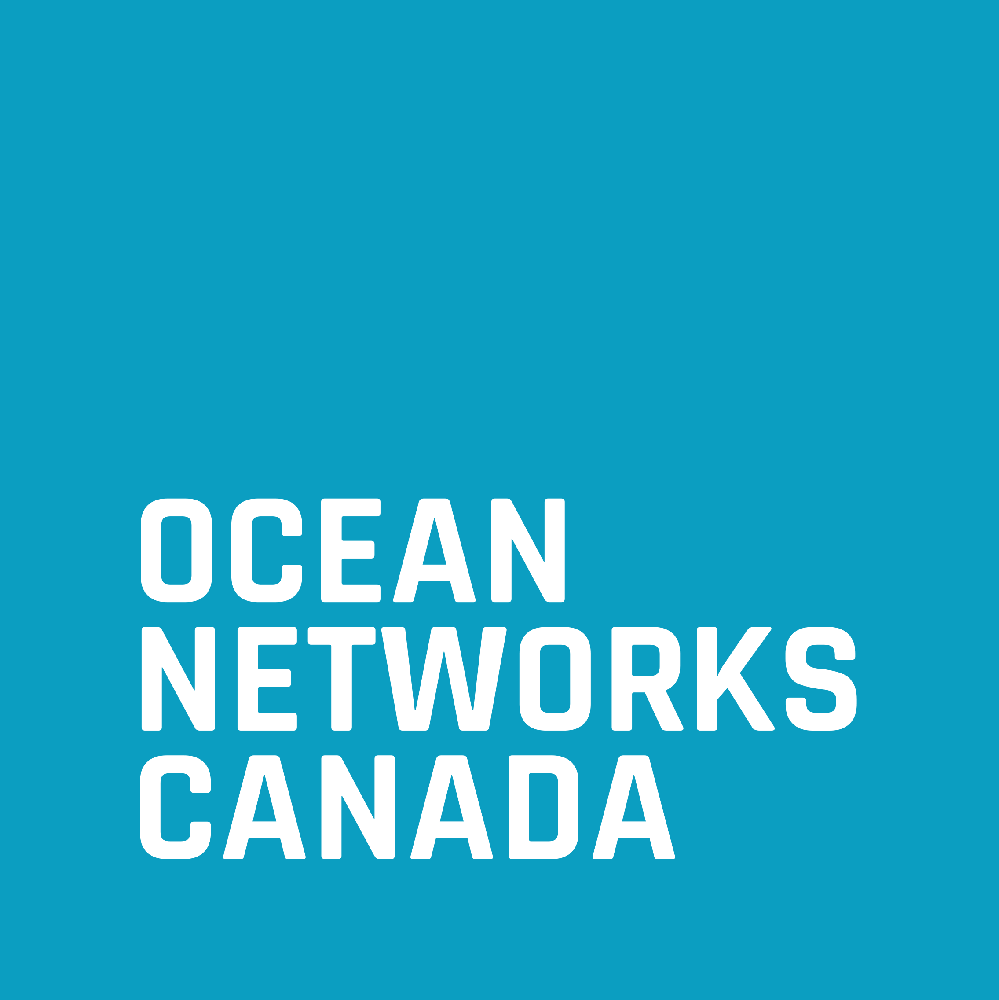
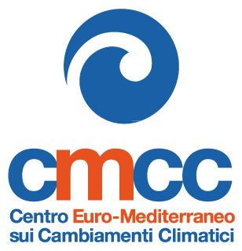
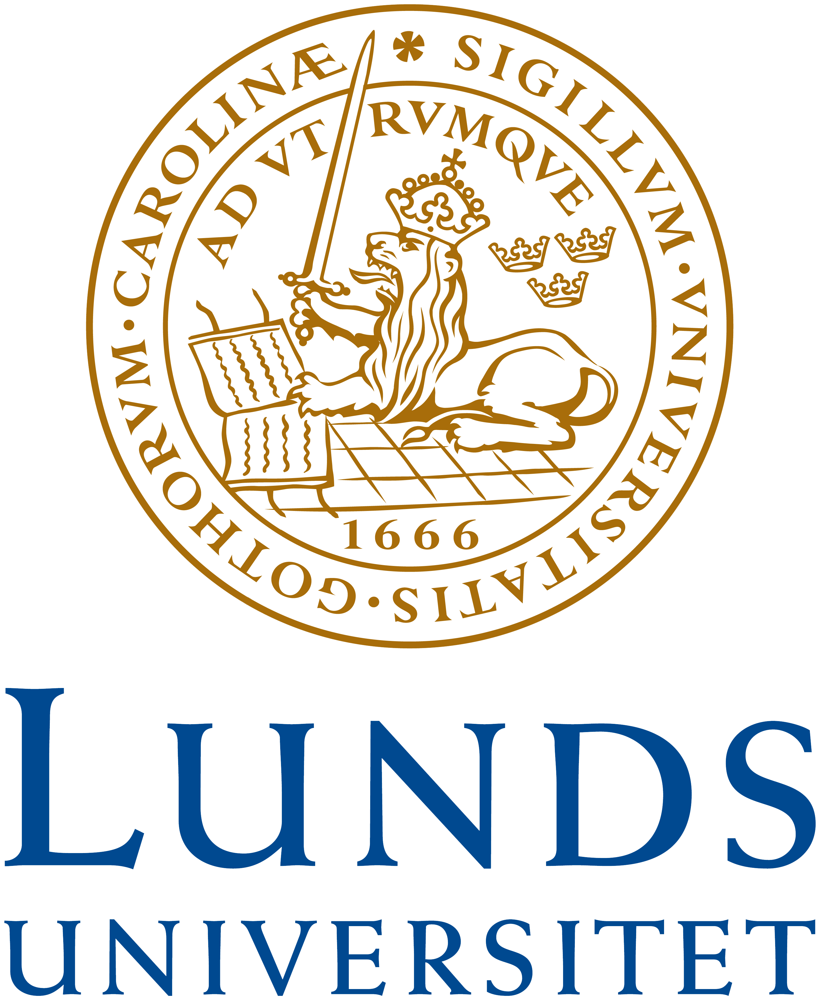
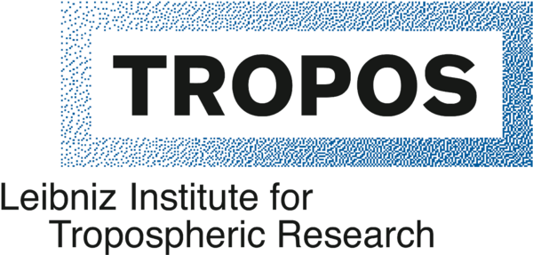
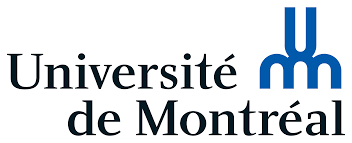
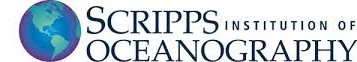

소개
안녕하세요! (Bonjour/Hi!)
제 이름은 Élise Beaudin입니다. 저는 물리해양학자이자 스토리텔러입니다. 풍부한 해상 승선 조사(Fieldwork) 경험을 가지고 있으며, 해양 및 기후 데이터와 관련된 모든 종류의 데이터 분석 역량을 갖추고 있습니다.
지금까지 캐나다, 스웨덴, 독일, 이탈리아, 미국 등 세계 여러 나라에서 거주하며 연구해 왔습니다. 프로그래밍, 음악 연주 및 작곡, 영화 제작을 사랑하며, 물론 바다를 가장 사랑합니다!
LinkedIn을 통해 편하게 저와 네트워킹하시거나, ebeaudin[@]oceannetworks.ca로 이메일을 보내주세요.
학력
| 2019–2025 |
물리해양학 박사 (Ph.D.) 브라운 대학교 (Brown University), 로드아일랜드주 프로비던스, 미국 지도교수: Manu Di Lorenzo & Mara Freilich |
| 2016–2019 |
기상학 및 물리해양학 석사 (M.Sc.) 게오마르 해양연구소 (GEOMAR), 킬, 독일 지도교수: Nadia Pinardi & Arne Biastoch |
| 2013–2016 |
물리학 학사 (B.Sc.) 몬트리올 대학교 (Université de Montréal), 몬트리올, 캐나다 지도교수: Paul Charbonneau |
거쳐온 연구 기관
지난 몇 년 동안 학업, 인턴십, 그리고 장기 연구 프로젝트를 수행하기 위해 세계 여러 곳을 거쳐왔습니다. 제가 연구원 및 학생으로 몸담았던 기관들은 다음과 같습니다:
| 2025–현재 | 오션 네트웍스 캐나다 (Ocean Networks Canada), 브리티시컬럼비아주 빅토리아, 캐나다 |
| 2022–2025 | 브라운 대학교 (Brown University), 로드아일랜드주 프로비던스, 미국 |
| 2021–2022 | 스크립스 해양연구소 (Scripps Institution of Oceanography), 캘리포니아주 샌디에이고, 미국 |
| 2019–2021 | 조지아 공과대학교 (Georgia Institute of Technology), 조지아주 애틀랜타, 미국 |
| 2017–2019 | 볼로냐 대학교 / 유로-지중해 기후변화 센터 (Universita' di Bologna / CMCC), 볼로냐, 이탈리아 |
| 2016–2018 | 게오마르 헬름홀츠 해양연구소 (GEOMAR Helmholtz-Center for Ocean Research), 킬, 독일 |
| 2015–2016 | 룬드 대학교 (Lund University), 룬드, 스웨덴 |
| 2015 | 라이프니츠 대기연구소 (TROPOS Leibniz Institute for Atmospheric Research), 라이프치히, 독일 |
| 2014 | 우라노스 기후컨소시엄 (Ouranos), 몬트리올, 캐나다 |
| 2013–2016 | 몬트리올 대학교 (Université de Montréal), 몬트리올, 캐나다 |







